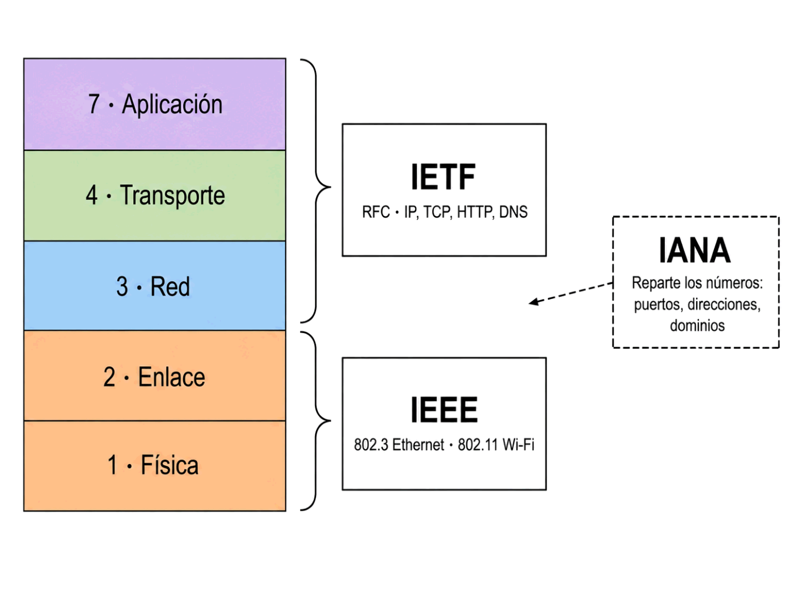

Hoy la respondemos. Y con ella, quién decide cuántos bytes mide una cabecera IP, qué significa cada bit de una MAC y por qué un cable de un fabricante encaja en el aparato de otro.
Contenido del día
1. Por qué hacen falta estándares
Coge un cable de red de casa, llévalo a otro edificio y enchúfalo en un aparato de una marca distinta, comprado en otro país diez años después. Funciona.
Eso no es casualidad ni suerte: es el resultado de que alguien escribiera, en un documento público, exactamente cuántos hilos lleva el cable, en qué orden van, qué voltaje representa un uno y cuánto tiempo dura cada bit.
- Interoperabilidad: equipos de fabricantes distintos se entienden.
- Competencia: puedes cambiar de proveedor sin cambiar toda la red.
- Continuidad: lo comprado hoy seguirá funcionando dentro de años.
- Precio: muchos fabricantes haciendo lo mismo abaratan el producto.
En los años setenta y ochenta cada fabricante tenía su propia arquitectura de red: IBM la suya, Digital la suya, Novell la suya. Eran incompatibles entre sí.
Comprar equipos de IBM significaba seguir comprando de IBM: cambiar de proveedor obligaba a sustituir la red entera. Se llama dependencia del proveedor, y era el modelo de negocio, no un defecto.
Que hoy puedas conectar un portátil cualquiera a un router cualquiera es una conquista relativamente reciente, y es la razón de que exista este tema.
2. De iure y de facto
Hay dos formas de que algo se convierta en estándar, y conviene distinguirlas porque explican comportamientos muy distintos.
| Estándar de iure | Estándar de facto | |
|---|---|---|
| Significa | «De derecho» | «De hecho» |
| Cómo nace | Un organismo oficial lo aprueba y publica | Se impone porque todo el mundo lo usa |
| Ejemplos | Ethernet (IEEE 802.3), el modelo OSI (ISO 7498) | El PDF antes de 2008, los formatos de Microsoft Office en los noventa |
| Ventaja | Público, estable, sin dueño | Rápido: no espera a ningún comité |
| Riesgo | Lento de aprobar | Puede tener dueño, y el dueño puede cambiarlo o cobrarlo |
Con el tiempo TCP/IP también se volvió de iure, publicado en documentos abiertos que cualquiera puede leer. Es el mejor final posible: la rapidez del de facto y la estabilidad del de iure.
Y aclara por qué merecía la pena la historia de ayer: no ganó el que tenía más autoridad, ganó el que funcionaba. Pero acabó necesitando la autoridad para durar.
3. Los organismos que importan
Son muchos, pero para redes solo hacen falta seis. Aprende de qué se ocupa cada uno, que es lo que se pregunta.

| Organismo | Qué es | De qué se ocupa | Ejemplo |
|---|---|---|---|
| ISO | Organización Internacional de Normalización | Normas de todo tipo, no solo informática | El modelo OSI (ISO 7498) |
| IEEE | Instituto de Ingenieros Eléctricos y Electrónicos | Las capas 1 y 2: lo físico y el enlace | 802.3 (Ethernet), 802.11 (Wi-Fi) |
| IETF | Grupo de Trabajo de Ingeniería de Internet | Los protocolos de Internet: capas 3 a 7 | Los RFC: IP, TCP, HTTP, DNS |
| IANA / ICANN | Autoridad de Números Asignados en Internet | Repartir números y nombres: puertos, direcciones, dominios | Que el puerto 80 sea el de la web |
| ITU-T | Unión Internacional de Telecomunicaciones | Telecomunicaciones: telefonía, fibra, satélite | Normas de fibra óptica y ADSL |
| W3C | Consorcio de la World Wide Web | Tecnologías de la Web, no de la red | HTML y CSS |
HTTP es el protocolo: cómo se piden y envían los documentos. Es de redes.
HTML es el formato de esos documentos. Es de la Web.
Un servidor puede enviar por HTTP una imagen, un vídeo o un PDF, sin nada de HTML. Por eso los separan dos organismos distintos.
Si el estándar tiene que ver con cables, tramas o el aire —capas 1 y 2—, mira hacia el IEEE.
Si tiene que ver con protocolos que viajan por Internet —capas 3 a 7—, mira hacia la IETF.
Y si se trata de repartir un número o un nombre para que no se repita, eso es IANA.
4. Cómo se hace un estándar de Internet
La IETF funciona de una forma bastante rara comparada con un organismo tradicional, y esa rareza es justo lo que la hizo eficaz.
| La IETF | |
|---|---|
| Quién puede participar | Cualquiera. No hay cuota ni hace falta representar a una empresa |
| Cómo se decide | Por consenso aproximado, no por votación |
| Qué se exige | Que exista código que funcione, y a ser posible dos implementaciones independientes |
| Qué publica | RFC, documentos numerados, públicos y gratuitos |
Se numeran correlativamente y para siempre. El RFC 791 es IP y lo será eternamente: un RFC publicado no se modifica nunca. Si algo cambia, se publica un RFC nuevo que deja obsoleto al anterior, y el viejo se queda ahí, marcado pero legible.
Es un archivo histórico completo de cómo se construyó Internet, desde el RFC 1 hasta hoy, y cualquiera puede leerlo entero sin pagar nada.
| Paso | Qué es |
|---|---|
| 1. Internet-Draft | Un borrador. Cualquiera puede publicarlo. Caduca a los seis meses si nadie lo trabaja |
| 2. Proposed Standard | Ya es un RFC numerado. Aquí se queda la mayoría de los protocolos que usas a diario |
| 3. Internet Standard | Categoría reservada a lo muy asentado y con implementaciones sobradamente probadas |
HTTP nunca ha llegado a «Internet Standard». Se ha quedado siempre en Proposed Standard, que es el primer escalón real, pese a ser posiblemente el protocolo más usado del planeta.
No es un descuido: la promoción exige un trabajo administrativo que a nadie le compensa hacer cuando el protocolo ya funciona y todo el mundo lo usa. Rough consensus and running code otra vez: si funciona, la etiqueta importa poco.
| RFC | Qué define | Año |
|---|---|---|
| 768 | UDP | 1980 |
| 791 | IP: los 20 bytes de cabecera que has contado toda la semana | 1981 |
| 792 | ICMP, el protocolo que hay detrás de ping | 1981 |
| 826 | ARP | 1982 |
| 2119 | El significado exacto de «DEBE» y «DEBERÍA» en los demás RFC | 1997 |
| 9110-9112 | HTTP/1.1, que sustituyen al veterano RFC 2616 | 2022 |
| 9293 | TCP, que sustituye al RFC 793 de 1981 | 2022 |
5. La familia IEEE 802
El IEEE agrupa todas sus normas de redes locales bajo el número 802, y después añade un punto y otro número para cada tecnología. Reconocer esa numeración es muy útil: aparece en las cajas de los productos.
| Norma | Qué define | Dónde la has visto |
|---|---|---|
| 802.3 | Ethernet: la trama, el cable, el CSMA/CD | Todo lo de la Semana 2 |
| 802.11 | Wi-Fi | Semana 1, Día 4 |
| 802.1Q | VLAN: dividir un switch en redes lógicas | Lo verás en el Mes 9 |
| 802.1X | Autenticación antes de dar acceso al puerto | Mes 11 |
| 802.3af | PoE: alimentar un aparato por el cable de red | Cámaras y teléfonos IP |
Que un aparato lleve el logotipo de Wi-Fi significa que ha pasado las pruebas de compatibilidad de esa asociación. Cumplir 802.11 y llevar el logotipo no son lo mismo, aunque en la práctica vayan casi siempre juntos.
Y por eso los nombres comerciales —Wi-Fi 5, Wi-Fi 6— no coinciden con los técnicos: Wi-Fi 6 es 802.11ax. Los pusieron precisamente porque «802.11ax» no se le queda a nadie.
6. IANA: quién reparte los números
Y aquí está por fin la respuesta a la pregunta de ayer.
IANA no manda sobre nadie. Lleva un registro para que dos cosas distintas no acaben usando el mismo número. Es un trabajo de bibliotecario, no de autoridad, y aun así sostiene Internet entera.
| IANA lleva el registro de… | Ejemplo |
|---|---|
| Puertos | 80 web, 443 web segura, 53 DNS, 22 SSH |
| Números de protocolo | El 6 que identifica a TCP dentro de una cabecera IP |
| Bloques de direcciones IP | Los reparte por continentes; en Europa los gestiona RIPE NCC |
| Dominios de primer nivel | .com, .org, .es |
Un reparto que ya conoces: los primeros tres bytes de una MAC, que identifican al fabricante. Ese registro lo lleva el IEEE, porque las MAC son de capa 2 y la capa 2 es suya.
Es la regla del apartado 3 funcionando: capas 1 y 2 son del IEEE; de la 3 a la 7, de la IETF; y los números de esas capas, de IANA.
Hoy, en Wireshark, verás esos tres bytes traducidos automáticamente al nombre del fabricante. Esa traducción sale justamente del registro del IEEE.
| Rango | Nombre | Para qué |
|---|---|---|
| 0 - 1023 | Bien conocidos | Servicios estándar. En Linux hace falta ser administrador para usarlos |
| 1024 - 49151 | Registrados | Aplicaciones que han pedido un número a IANA |
| 49152 - 65535 | Efímeros | Los que el sistema asigna a los clientes |
7. Cómo se lee un RFC
Los RFC no son manuales: son especificaciones. Están escritos para que quien programe el protocolo no tenga ninguna duda, y por eso usan un lenguaje muy preciso.
| Palabra | Significa |
|---|---|
| MUST / REQUIRED | Obligatorio. Si no se cumple, no es una implementación válida |
| MUST NOT | Prohibido |
| SHOULD | Recomendado. Se puede incumplir, pero hay que saber por qué |
| MAY / OPTIONAL | Opcional de verdad: hacerlo o no, y ambas cosas son válidas |
Cada 1 de abril se publican RFC de broma, escritos con toda la seriedad formal del formato. El más famoso es el RFC 1149, de 1990: «Transmisión de datagramas IP mediante aves». Especifica cómo transportar paquetes IP atados a la pata de una paloma mensajera.
Tiene incluso una ampliación, el RFC 2549, que le añade calidad de servicio. Y en 2001 un grupo noruego lo implementó de verdad: nueve paquetes enviados, cuatro entregados, con tiempos de respuesta de algo más de una hora.
Detrás de la broma hay algo serio, y es la mejor demostración posible de lo que viste ayer: IP funciona sobre cualquier cosa capaz de mover bits, porque el modelo no define la capa de abajo. Incluso si esa capa es una paloma.
8. Resumen y errores frecuentes
- Un estándar garantiza interoperabilidad, competencia, continuidad y precio.
- De iure: lo aprueba un organismo. De facto: se impone por el uso.
- IEEE → capas 1 y 2. IETF → capas 3 a 7. IANA → los números.
- HTTP es de la IETF; HTML, del W3C. Protocolo frente a formato.
- Los RFC son públicos, gratuitos, numerados para siempre y no se modifican: se sustituyen.
- 802.3 Ethernet, 802.11 Wi-Fi, 802.1Q VLAN.
- IANA reparte puertos, números de protocolo, direcciones y dominios; el IEEE reparte los OUI.
- Puertos: 0-1023 conocidos, 1024-49151 registrados, 49152-65535 efímeros.
- En un RFC, MUST es obligatorio y SHOULD es recomendado.
Errores frecuentes
| Se dice… | …pero en realidad |
|---|---|
| «HTML y HTTP son del mismo organismo» | HTML es del W3C; HTTP, de la IETF |
| «Los RFC se van actualizando» | Nunca se modifican. Se publica uno nuevo que deja obsoleto al viejo |
| «Hay que ser miembro para participar en la IETF» | Es abierta a cualquiera y sin cuota |
| «IANA manda en Internet» | Solo lleva registros para que no se repitan los números |
| «Wi-Fi es el nombre técnico» | El técnico es 802.11; Wi-Fi es una marca |
| «El IEEE define IP» | IP es de la IETF. El IEEE se ocupa de las capas 1 y 2 |
| «Un estándar de facto es peor» | Es más rápido; el riesgo es que tenga dueño |
| «SHOULD y MUST son parecidos» | Uno es obligatorio y el otro no. Ahí está la diferencia entre incompatible y opinable |
9. Repaso con flashcards
Piensa la respuesta antes de girar la tarjeta.
Quiz del día
15 preguntas · 24 minutos · Contesta sin volver a la teoría
El cronómetro no corre mientras lees: arranca al llegar aquí, al pulsar «Empezar quiz» o al marcar tu primera respuesta.
Resultados
Respuestas correctas: 0 / 0
Respuestas incorrectas: 0
Vas a capturar tráfico real y encontrar en los bytes lo que has estudiado esta semana: los 14 bytes de Ethernet, los 20 de IP, los 20 de TCP y el bit DF. Y a decir, de cada campo, qué organismo lo definió.
→ Ir al laboratorio del Día 4 (70 min)
Síntesis de la semana, mazo de flashcards de los cuatro días y test semanal de 25 preguntas cronometrado, con desglose por día para saber exactamente qué repasar.
Prepáralo: repasa las dos tablas que más caen, la correspondencia OSI ↔ TCP/IP y los tamaños de cabecera.